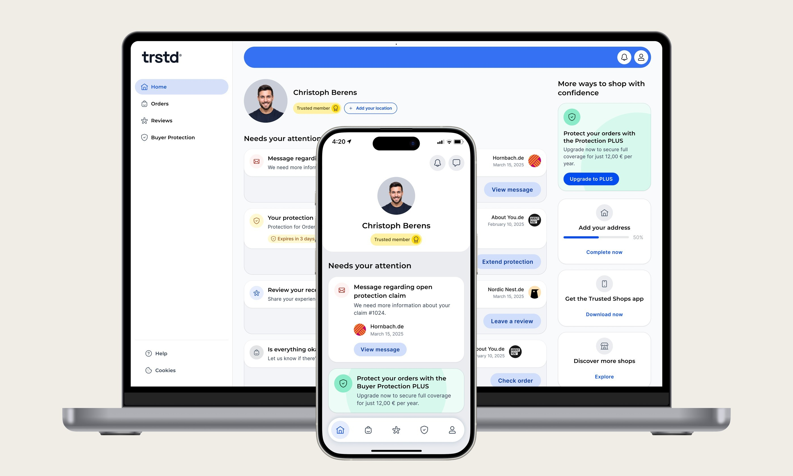

Turning an invisible account into a product people actually use
Trusted Shops is a European platform that helps online stores build trust through trustmarks, verified reviews and Buyer Protection. The Trusted Account was meant to be the central touchpoint for consumers – managing protection, writing reviews, interacting with shops. In reality, most users didn't even know they had one.
- Role
- Sole Product Designer
- Team
- PM, engineers, content design
- Timeline
- 2024 – 2025
- Platform
- Web · Mobile app

≈2×
User retention – users returning to the app within 14 days
≈7×
Verified public profile completion rate
≈3×
Free-to-PLUS subscription conversion
Problem
Strong B2B adoption, invisible B2C product
Despite strong B2B adoption, the consumer account was underused. Many users didn't realize they had one, engagement was low, and PLUS subscriptions weren't scaling. The product team had always positioned the account as the central hub for trust and engagement – but for most users it simply didn't exist.
How might we make the account more visible, easier to understand and genuinely useful – so that users see the value and actually want to engage with it?
Research
Five sources of evidence before a single screen
We had no fresh research, so I built the evidence base myself: user surveys, support tickets, product analytics, internal interviews and a heuristic review of competitors.
📝 User surveys
Many users didn't know they had an account – even paying PLUS subscribers. Most couldn't name a single PLUS benefit. No understood purpose → no reason to come back.
📨 Support tickets
Zendesk tickets showed the same confusion on repeat: how Buyer Protection works, what PLUS includes, and how to submit a claim when an order goes wrong.
📊 Product analytics
Only ~12% of users returned after first login. Profile completion and engagement under 10%. Subscription and review conversion each below 1% – reviews happened in emails, not in the account.
🤝 Internal interviews
Stakeholder conversations surfaced the real constraints: legal and brand limits on wording, questions around public-profile visibility, and a claim flow owned by another team.
🧭 Heuristic review
Against competitors, key actions were harder to discover and flows harder to follow – especially on mobile. Competitors solved the same tasks in fewer steps.
Framing
From one big gap to four workable themes
Together with the PM I defined success metrics up front – tracked in GA, Metabase and backend event logs – and broke the opportunity into four themes. Then I mapped the full account journey and turned the research pains into a content-priority matrix.
🔎 Visibility & awareness
Make the account easy to find and explain in plain words what it is and why it matters.
✅ Trust & transparency
Show credibility with clear Buyer Protection status, verified identities and public profiles.
📦 Clarity & self-service
Let users quickly check their orders and submit claims without getting lost.
⭐ Review engagement
Give people simple ways to leave reviews right in the account, so participating feels natural.
Priority
🧾 Detailed order overview – what did I buy, when, and is it protected?
Priority
🛡️ Protection status – am I covered, and until when?
Priority
📄 Open protection claims – clear steps, easy to find, no legal jargon.
Priority
💳 Subscription status – do I have PLUS, what's included, how to manage?
Priority
✍️ Review prompts – can I leave a review here, and why should I?
Design
From workshops and wireframes to a gradual launch
I started with cross-functional workshops – product, support, legal and management – to align on goals and surface edge cases early. From there: user journeys and entry points for protection, profiles, subscriptions, reviews and orders; low-fi wireframes; quick prototypes to test flows like submitting a claim or upgrading to PLUS.
For the final designs I worked closely with engineers, the PM and content design. We reused design-system components, added scalable patterns like protection badges and profile cards, and tested for accessibility and responsiveness with QA. We launched gradually – German mobile users first, then the other markets.


Outcome
From hidden feature to a product users care about
We launched the redesigned account in December 2024 and started tracking results right away. Retention grew by 11 p.p., verified profile completion jumped 63 p.p., subscription conversion rose 1.8 p.p., and support tickets about opening a Buyer Protection case dropped 24 p.p.
Not everything hit target – reviews inside the account grew only 6 p.p. and subscription-related tickets fell just 10 p.p. Hotjar research showed the product value still isn't clear enough for users coming from external channels; that's the next iteration.
This work mixed research with teamwork and led to real results. It also pushed me into a more strategic role – where design choices shape both the user experience and the business.

Next project